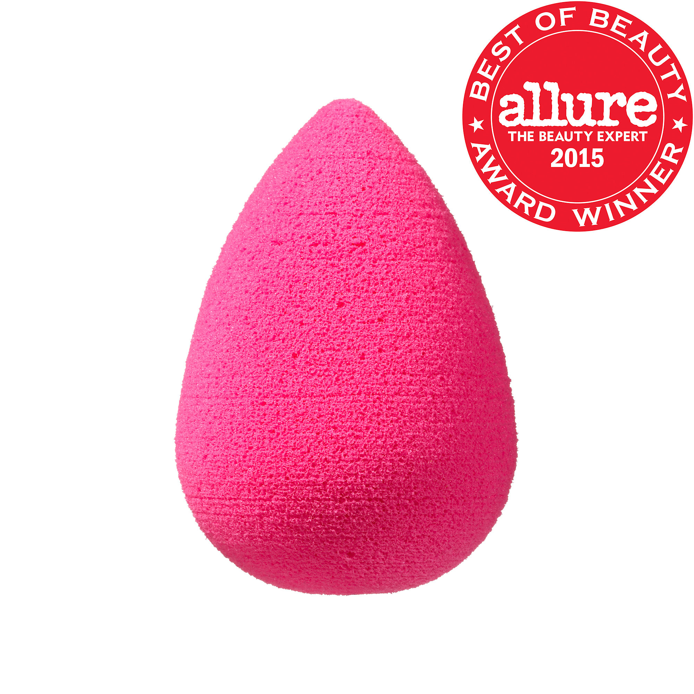

Makeup Tips
How to get an intense highlight
Apply a creme base highlight before you place powder highlight.
How to look more awake
Put down the black eyeliner!
Use a lighter tone eyeliner preferably nude to make an illusion that your eyes are bigger and awake.
If you have dry skin and want a dewy finish on your foundation you can use a liquid highlighter.

You can use a bronzer and a contour shade as an eyeshadow. You can also use a creme blush as a lipstick.
Mascara should be thrown out every 3-6 months after being opened. Eye pencils and Lip pencils can last up to 5 years. Eyeshadows can last up to two years. Toss lipstick, lip gloss, foundation and concealers should be thrown out after 2 years as well. If you have a BB cream that is unopened it can last up to 3 years. Lastly, a primer can be used for 2 years as well.
Beauty BlenderA beauty blender is like a brush but unlike some makeup brushes a beauty blender doesn't suck up as much products. A beauty blender is also used to get a professional finish at home.